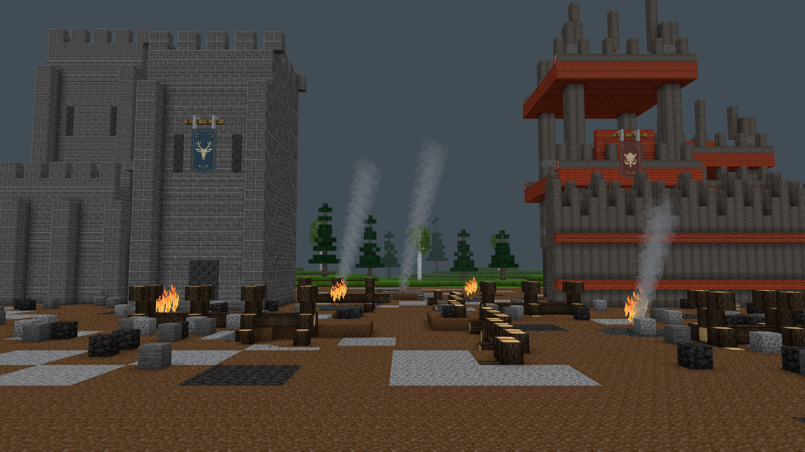
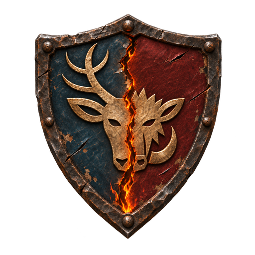

Lokaler Vorschlag · Architektur 0.75.5
Die neuen Häuser in der Charaktererstellung
Die sechs bestehenden Szenen wurden mit den aktuellen Spielgebäuden neu gerendert. Kameras, Bäume, Requisiten und Standpunkte bleiben erhalten. Darunter findest du den direkten Vergleich in der Kameraperspektive des Spiels. Der Neuaufbau übernimmt auch frühere Gebäudekorrekturen, die in den alten Bildern noch fehlen, etwa die geöffneten Menschenfenster.
Das Wappen im Auftakt
Mein Vorschlag: das transparente Wappen unten mittig über dem bestehenden Titel. Zurückhaltend groß, als eigenes UI-Element. Es ist nur im Auftakt sichtbar; nach der Volkswahl gehört die Bühne wieder dem Charakter.
Create your character


TWO FACTIONS · ONE WORLD
Choose your fate
Choose your people. Begin your story.
Esc: pause creation. Press I to return.
Browser-Mockup der bestehenden Spielansicht, kein neuer Luanti-Screenshot. Das Wappen nutzt unverändert den transparenten Export. Die größere Variante zeigt, wie schnell das Logo mit der Szene konkurriert.
Die sechs Hintergründe · Alt gegen Neu
 Vorher · vor der Architekturüberarbeitung
Vorher · vor der Architekturüberarbeitung Neu · aktuelle Architektur
Neu · aktuelle ArchitekturÜbernommen: sechs aktualisierte Hintergrund-PNGs und das dezente Wappen als transparentes UI-Bild. Der Titel bleibt echter Text. Das Festungsbild im Auftakt muss nicht umgebaut werden: Es verwendet keine der überarbeiteten Wohnhaus-Templates.